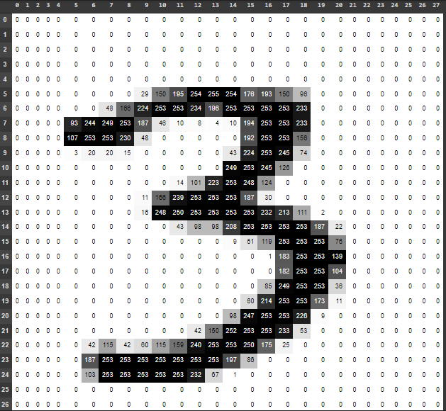

Me and my teammates created and trained machine learning models to recognize integers (0-9).
We trained two different models, an SVM (Support Vector Machine) and a neural network.
We compared the different methods, their resulting accuracies, and any advantages/disadvantages that one may have had over the other.